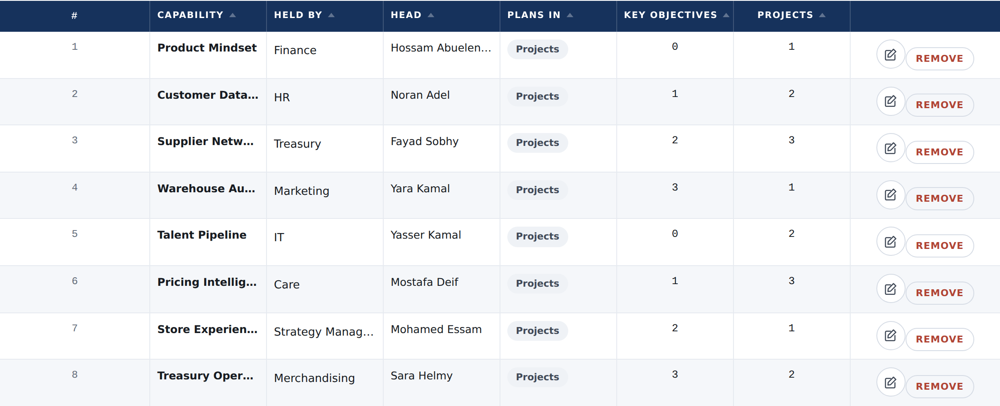
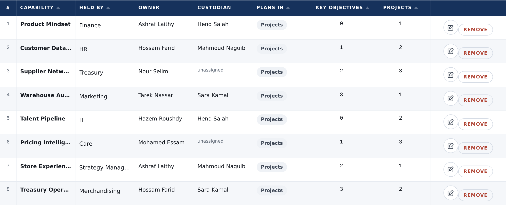
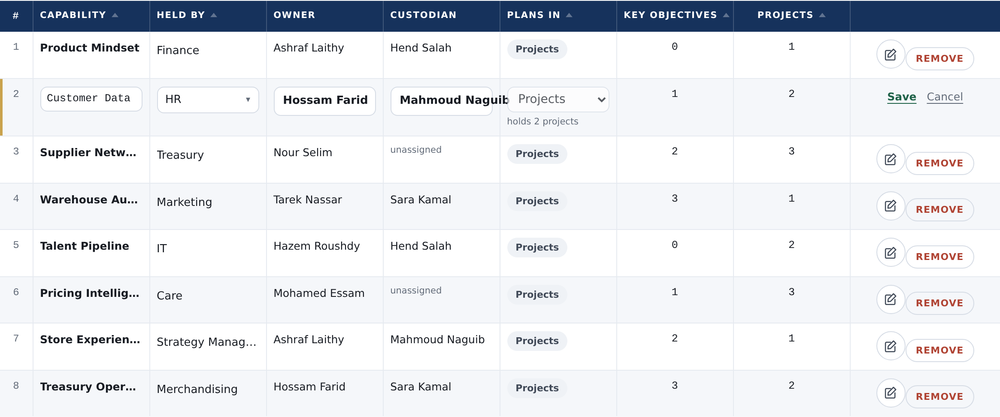
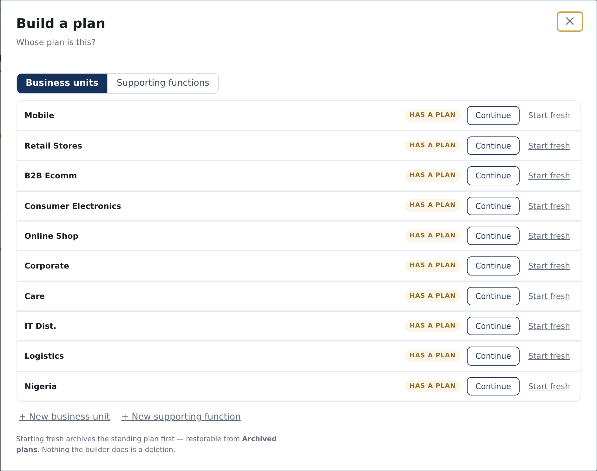
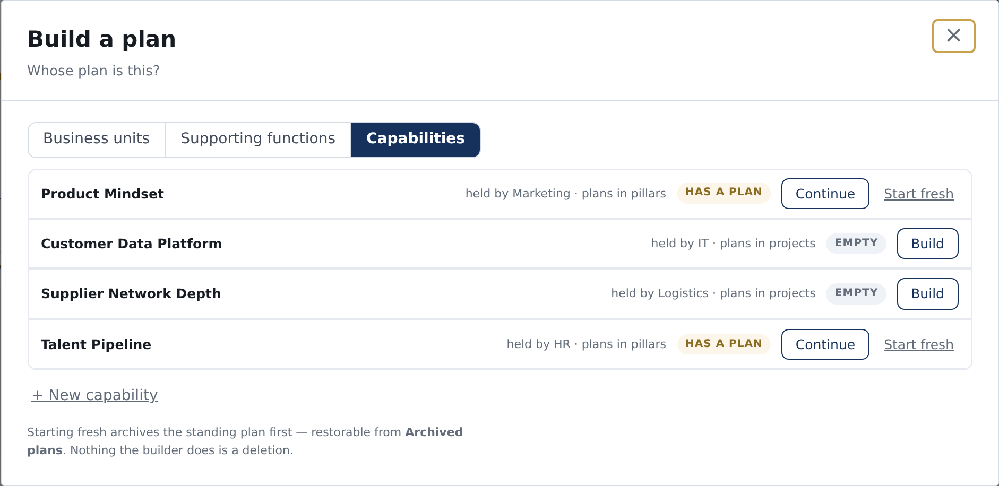

“yes plan builder should be able to build a capability”
“a capability has it's ownership structure and if someone is set on a capability with the new concept of it the person shall see the capability”
“The capability is owned like a unit it has an owner and custodian.”
A business unit has two named people: an owner and a strategy custodian. A capability has neither — it borrows whoever runs the function that holds it. This gives a capability its own two, and lets somebody build one from scratch.
This is small, and it is worth showing why before showing the pictures. Almost every piece exists and is pointed the right way.
| The piece | Today | What changes |
|---|---|---|
| The picker that names somebody | One picker serves units and functions | Nothing — it already takes a capability’s address |
| Naming the place on screen | A capability already has a name everywhere | Nothing |
| Which column on Roles & access judges it | The supporting-function column | Nothing — no new column, nobody’s rights move |
| Where the two names are kept | A unit keeps its pair; a capability keeps none | The capability row keeps its own pair — no database change |
| Working out what somebody holds | Reads the units and the functions | Reads the capabilities too |
| What a person may open | A capability hands the question to its function | Its own two people answer first, the function still answers after |
| The Capabilities page | Shows the function’s head, read only | Shows the capability’s own owner and custodian, settable |
| The plan builder | Business units and supporting functions | Capabilities as a third kind |
The Head column today is borrowed — it prints whoever runs the function, and there is no way to change it here. It becomes the capability’s own Owner, with a Custodian beside it. Both are the same two words a business unit uses, set with the same control.



The builder asks whose plan this is and offers two kinds. A capability now has its own pages, so it is a third kind — and it says who holds it and how it plans, the way a function already says how it plans.


A new column usually costs the others their width. Here it costs nothing, and the reason is a small fault on that page that this pays for on the way past.
# column, which holds one digit. That is what pays for the new column.The # column is 175px wide on this page and 38px on the
Functions page next door, which already pins it. Nobody had noticed,
because until now there was nothing competing for the room.
Narrowing it alone paints the name column on top of its neighbour — the second column is frozen at an offset written as the old width. Two lines, not one. Both are in the picture above; neither was in the first drawing.
Naming an owner on a capability must add to who can reach it, never replace. A unit’s owner does not lock the group out of their unit, and “owned like a unit” reads the same way here: the function’s head and custodian keep everything they have today, and the capability’s own two are added beside them.
Say so and I will build it instead — but the cost is real: the moment one capability is given an owner, the person running the function is locked out of it, and nothing on the screen would say why.
Two places — the note under this very table, and the knowledge base — say a custodian is named after the function and never after a capability, and give the reason: a function may hold several, so naming somebody after one breaks when a second arrives.
That was true when a capability had no identity of its own. It has one now — its own pages, its own row on the cycle board — so a function with two capabilities gets two custodians, which is finer rather than broken. Both sentences get corrected in the same change, or the product goes on telling people the opposite of what it does.
# column pinned, the frozen column’s
offset moved with it.Nothing above is built. Every picture is the real platform with the proposal drawn into it — same build, both sides.